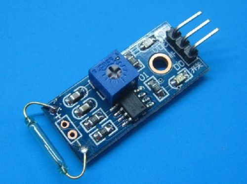
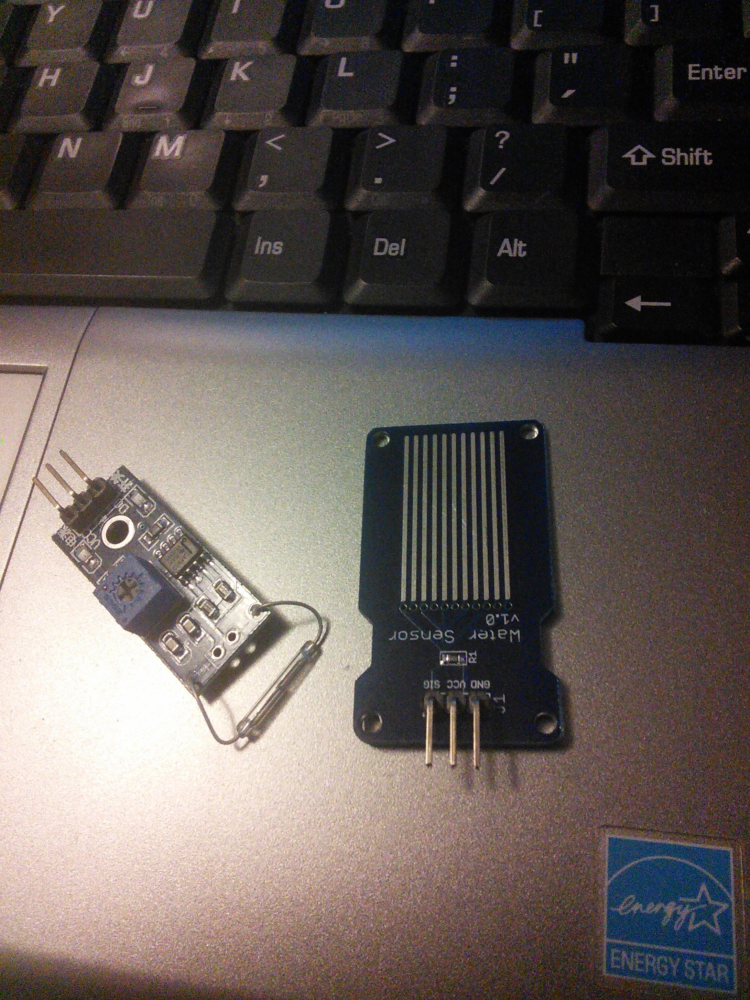

{width="2.219141513560805in" height="1.6510422134733158in"}
Specification
1, The use of imported normally open dry Reed tube
2, Comparator output signal clean wave well, driving ability, than 15mA.
3, Rated voltage and 3.3V-5V
4, Outputs: digital switching output (0 and 1)
5, Abolt-hole, is easy to install
6, Small Board PCB dimensions: 3.2cm x 1.4cm
7, Using wide LM393 voltage comparator
Description:
1. The Reed switch and magnet fit is required, at the time of induction to a certain degree of magnetic, on-State, the module output low level, when there is no magnetic force, a
disconnected state, output high, Reed switch and magnets sensing distance of the 1.5cm beyond insensitive or will not trigger the phenomenon;
2. DO the module output can be directly connected to the microcontroller I/O ports, Reed can be detected by single-chip microcomputer trigger status;
3. Modules DO the output connected to the relay IN-formed power Reed switch, direct control of high voltage.
May 8, 2014
Magnetic Reed Switch & Water Sensor - These two devices work the same way, they are (for the most part) switches, what I found interesting and was not expecting is that both are active low devices, What that means, is they both pass the 3.3v or 5v until the either a magnetic is put to the reed switch, or the contacts on the water sensor are connected, then they go low.
There are probably a dozen of ways to use these, I ended up hooking them to an analog in and reading the voltages from there output lines, and then I turned on the LED connected to pin 13.
http://arduino.cc/en/Tutorial/ReadAnalogVoltage
My slightly modified sketch:
/*
ReadAnalogVoltage
Reads an analog input on pin 0, converts it to voltage, and prints the result to the serial monitor.
Attach the center pin of a potentiometer to pin A0, and the outside pins to +5V and ground.
This example code is in the public domain.
*/
// the setup routine runs once when you press reset:
void setup() {
// initialize serial communication at 9600 bits per second:
Serial.begin(9600);
pinMode(13, OUTPUT);
}
// the loop routine runs over and over again forever:
void loop() {
// read the input on analog pin 0:
int sensorValue = analogRead(A0);
// Convert the analog reading (which goes from 0 - 1023) to a voltage (0 - 5V):
float voltage = sensorValue * (5.0 / 1023.0);
// print out the value you read:
Serial.println(voltage);
if (voltage > 1) {digitalWrite(13, LOW);}
if (voltage < 1) {digitalWrite(13, HIGH);}
}
I never saw these ever make it clear to zero volts, but I don’t know what kind of resolution the A2D converter has, and it doesn’t really matter. I made a choice that anything under 1 volt was going to turn something on, and any thing above 1 volt was going to turn that off.
Like I said there are probably a dozen of different ways to use these, that just seemed to be the quickest way.
{width="6.5in" height="8.666666666666666in"}